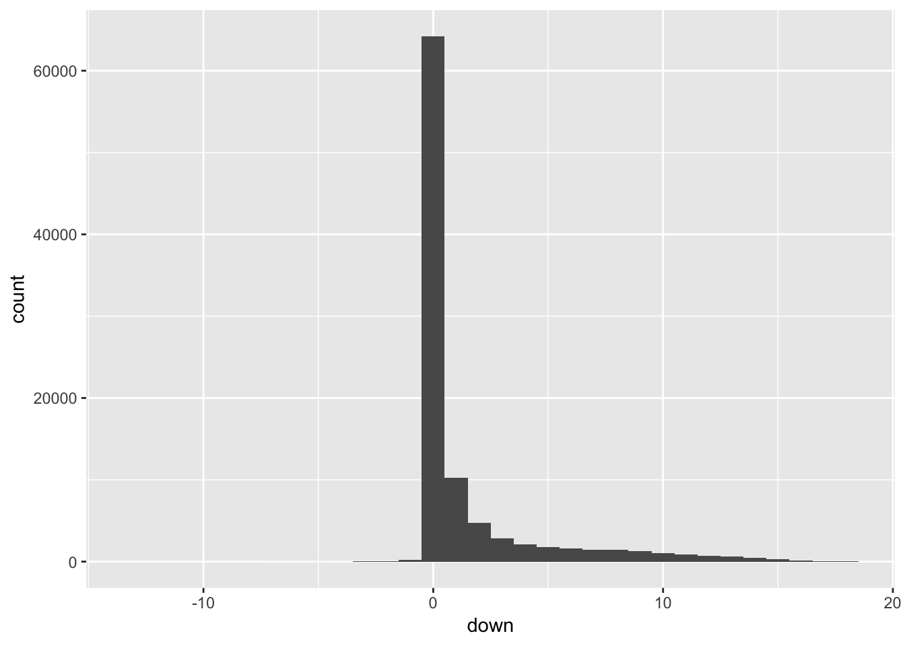

5 The subprime mortgage crisis unfolds in early 2007, part 2
Keywords: refactoring, unsupervised learning, principal component analysis, k-means clustering, correspondence analysis, chi-squared test, contingency table, pivot, correlation table
5.1 The fall of FICO
The problem with the conventional wisdom of long standing is that it loses sight of history. The prominence of FICO in home loan credit underwriting described in the Pinto Testimony had its origins in a different time (the early 1990s) and a different lending environment. Freddie Mac was in a good position to ensure that all other things were equal. It made only what came to be called “prime” loans, generally for no more than 80% of the value of the property, under more stringent limitations on the debt-to-income ratio of the borrower and many other criteria that it kept within a narrow range, and offered only a few varieties of loans.
In the subprime market that emerged in the late 90s, all of those factors changed. Criteria that were narrow became broad, documentation was relaxed and a widespread assumption was that continually rising home values would preclude any problems. It’s not surprising that FICO lost its predictive power.
5.2 Restructuring the data
Some of the testing of FICO as a useful metric involved subsetting the data. There were many more variables than the ones used, some of them categorical and some categorical coded as numeric. One potentially useful variable is location, because we know that real estate value are location sensitive. We have four location fields in the database, all derived from the postal zip code:
The zip code itself, which is generally either much smaller or much larger than the real estate market, and also changes at the convenience of the postal service. See the discussion at [On the use of ZIP codes and ZIP code tabulation areas (ZCTAs) for the spatial analysis of epidemiological data].
The metropolitan area derived from the U.S. Census ZIP code tabulation area, but covers a larger area than most real estate markets
Longitude and latitude dervived from the ZCTA’s, used for mapping
As a compromise, I converted the 5-digit zip codes into 3-digit zip codes. In metropolitan areas, the 3-digit codes are the sizes comparable to how the multiple listing services divide the market. We’ll see if there is any value in this proxy measure of real estate market.
It was time to reorganize the database into a more streamlined version, that captured the information on performance (relieving the 11-month constraint) and transformed the fields that needed to be treated as categorical, rather than continuous. It’s much more efficient to put this in a new SQL table than to keep in memory, especially since sampling will be involved. Here’s the revised data layout:
MariaDB [dlf]> describe loans;
+-----------+--------+------+-----+---------+-------+
| Field | Type | Null | Key | Default | Extra |
+-----------+--------+------+-----+---------+-------+
| row_names | text | YES | | NULL | |
| ctapeno | double | YES | | NULL | |
| deal | text | YES | | NULL | |
| fico | double | YES | | NULL | |
| dti | double | YES | | NULL | |
| cltv | double | YES | | NULL | |
| obal | double | YES | | NULL | |
| orate | double | YES | | NULL | |
| grade | text | YES | | NULL | |
| dtype | text | YES | | NULL | |
| fpd | text | YES | | NULL | |
| ltype | text | YES | | NULL | |
| pmiflag | text | YES | | NULL | |
| ppp | text | YES | | NULL | |
| otype | text | YES | | NULL | |
| purpose | text | YES | | NULL | |
| ptype | text | YES | | NULL | |
| zip | text | YES | | NULL | |
| perf | text | YES | | NULL | |
+-----------+--------+------+-----+---------+-------+
19 rows in set (0.00 sec)Between the first two rows (record identifiers) and the last row (the performance category) are the 17 variables we have to predict the performance outcome. For the almost 100,000 records, that is 1.7 million pieces of information. Technically we are in 17-dimensional space, and we need a way of flattening the dimensionality to be able to question the data.
5.3 Principal component analysis

The cumulative variance is 0.253, 0.497, 0.708, 0.858, 1 for this sample of 300.
From the loadings chart on the right, we see that obal (the original amount of the loan) and orate (the original rate of interest) are negatively correlated, -0.451. The remaining continuous variables, fico, dti (debt-to-income ratio), cltv (the ratio of first and second loans to the value of the mortgaged property), have small correlations:
The variables fico and cltv have some correlation (0.295), while fico and dti (-0.036) and dti and cltv (0.121) have low correlations.
The variable orate, however, is clearly discrete, so we re-run without it and increase the size of the sample to 9,000.

The variances are [1] 0.2875106 0.2654761 0.2497528 0.1972605
5.4 K-means clustering
The following represents the unsupervised classification of the fico, cltv, obal, and dti of an approximately 10% sample from the loans dataset.

Using the entire population, rather than a sample creates somewhat better defined clusters

K-means clustering of all loans in loans database
Consideration might be given to separately clustering high-balance loans. Other outliers, such as the zero FICO scores, can be safely ignored, as can be the anomalous loan with a 97% dti ratio.
5.4.1 Housekeeping
Since PCA is a relatively expensive calculation for 100K records, I saved the result to and Rda file for reuse. Now, I’ll add it to the loans database as another categorical variable.
Because I don’t run the MySQL server with rollback and to avoid a proliferation of names
MariaDB [dlf]> CREATE TABLE loans_bak AS SELECT * from loans;
Query OK, 96147 rows affected (1.06 sec)
Records: 96147 Duplicates: 0 Warnings: 0The strategy is to create df loans w/all fields and cbind cs.k$clusters, renam “value” to kcluster and write back to loans, after dropping it
dbWriteTable(con, "loans", cs)Here’s the code (not run, to avoid churn)
library(tidyverse)
library(DBI)
library(RMySQL)
library(FactoMineR)
drv <- dbDriver("MySQL")
con <- dbConnect(drv, username="root", password="", dbname ="dlf", host="localhost")
res <- dbGetQuery(con, "SELECT * from loans_bak")
cs <- as.tibble(res)
load("data/kmeans_loans.Rda") # brings in cs.k
#check for missing values
nrow(cs) == length(cs.k$cluster)
# convert to data frame
csk <- as.tibble(cs.k$cluster)
# rename the column
csk <- csk %>% transmute(kcluster = value)
# combine
loans <- bind_cols(cs,csk)
# remove duplicate rownames column
loans <- loans[-1]
# write back to SQL
#dbWriteTable(con, "loans", loans)
# test
#dbGetQuery(con, "SELECT * from loans limit 25")5.5 Do the clusters predict loan performance?
We previously classified loans in the pool based on payment history into three categories:
- A: no more than 1 missed payment during the life of the loan
- B: more than 1 missed payment during the life of the loan but current in the most recent report
- C: delinquent at least three times as of the most recent three payment reports
Do the three principal components of the numeric variables, obal, orate, dti and cltv have an association with the payment categories?
If they do, we have the makings of a model; otherwise, we need to look at the other data available.
5.5.1 Correspondence analysis
Principal component analysis and many other data tools work only on continuous data; for discrete (or categorical) values, we turn to contingency tables, where one variable is in the rows and the other in the columns, so this is sometimes called an r x c table.
I’ll use three 10% samples to check if the results are consistent. The idea is to see if the porportion of results are independent. In formal terms, that will be the null hypothosis. The test statistic is the chi-square test of independence. I’ll use the conventional p-value of 0.05 as the cutoff; anything less than that means that I cannot reject the null hypothesis that the performance categories and the factors are independent. Here are the contingency tables:
| 1 | 2 | 3 | |
|---|---|---|---|
| A | 37 | 32 | 15 |
| B | 2,340 | 4,672 | 829 |
| C | 322 | 645 | 108 |
| 1 | 2 | 3 | |
|---|---|---|---|
| A | 34 | 29 | 26 |
| B | 2,414 | 4,548 | 825 |
| C | 350 | 667 | 107 |
| 1 | 2 | 3 | |
|---|---|---|---|
| A | 33 | 31 | 13 |
| B | 2,493 | 4,574 | 783 |
| C | 322 | 624 | 127 |
and the chi-square tests are consistent.
[1] “Sample 1 chi square test for independence”
Pearson's Chi-squared testdata: table(s1) X-squared = 16.61, df = 4, p-value = 0.0023
[1] “Sample 2 chi square test for independence”
Pearson's Chi-squared testdata: table(s2) X-squared = 41.977, df = 4, p-value = 1.687e-08
[1] “Sample 3 chi square test for independence”
Pearson's Chi-squared testdata: table(s3) X-squared = 14.77, df = 4, p-value = 0.005203
The chi square test doesn’t allow us to conclude that the loan performance and PCA-dervived clusters are not independent. Put more plainly, the one seems to have nothing to do with the other.